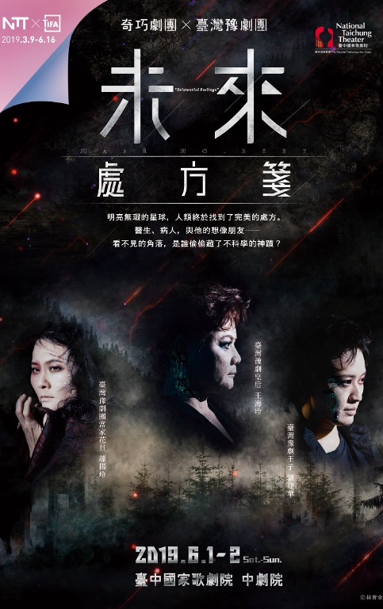
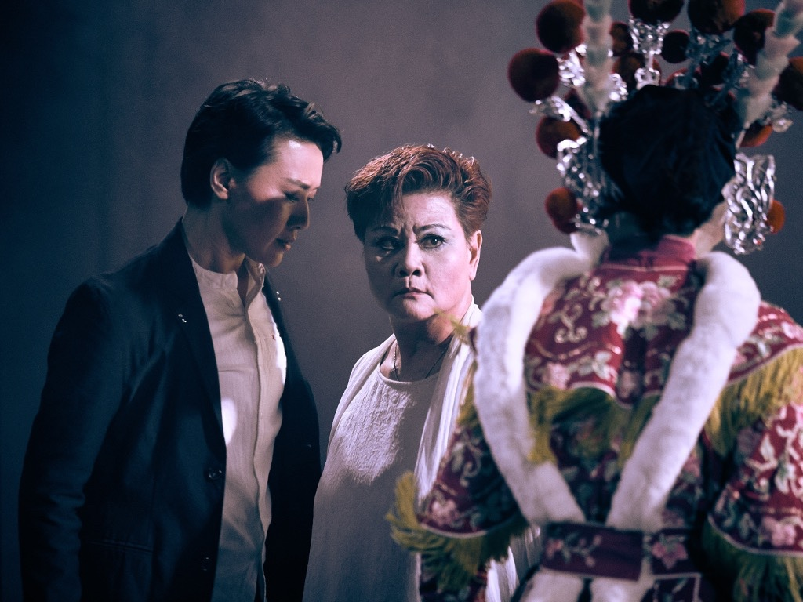
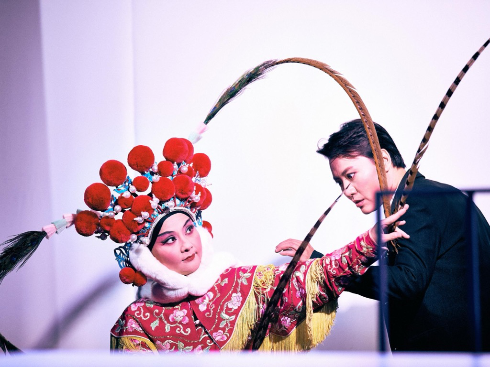

WORK · 2019
《未來處方箋》
編劇

在 AI 管理的未來，誰才是「故障」的人？
作品靈感取自契訶夫《第六病房》，把故事移入新地球紀元 298 年：AI 掌管政府與生活，人被區分、管理，「故障」者被送去修復。傳統豫劇的聲腔與當代寫實劇場，被放進同一個冷冽的未來世界。
奇巧劇團與臺灣豫劇團合作，由劉建幗編劇、符宏征導演，王海玲、蕭揚玲、劉建華等主演。
SYNOPSIS
病人 2537 與安醫師
新地球紀元 298 年，人類進入全面智能時代。政府由 AI 控管，人類依制度被分類；被判定「故障」的人則送往修復。安醫師在工作中遇見代號 2537 的病人，對方總被視為瘋言瘋語，卻一次次以記憶、情感與《楚辭・山鬼》的聲音，動搖醫師對「正常」的理解。
醫生與病人的位置逐漸交換：當制度能定義誰是故障、誰需要被修理，真正需要被診斷的究竟是個人，還是文明本身？
明亮無瑕的星球，人類終於找到了完美的處方。
醫生、病人，與他的想像朋友──
看不見的角落，是誰偷偷藏了不科學的神蹟？
醫生、病人，與他的想像朋友──
看不見的角落，是誰偷偷藏了不科學的神蹟？
STAGE IMAGES
演出劇照


CREATION
把戲曲聲音放進未來
作品讓豫劇不只作為文化符號出現，而把唱腔當成角色情感與記憶的另一層語言。未來世界的冷靜、制度化視覺，與戲曲身體及聲音的歷史感互相撞擊。